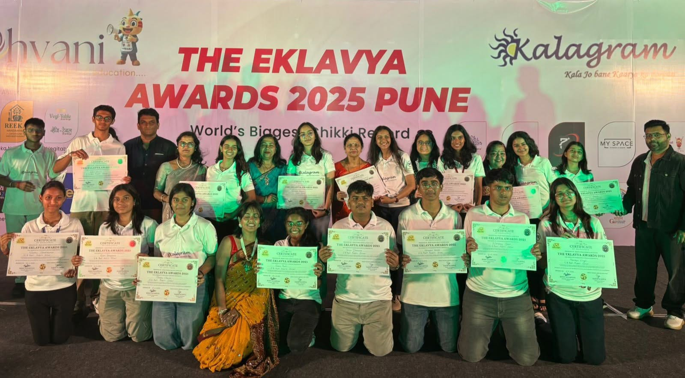
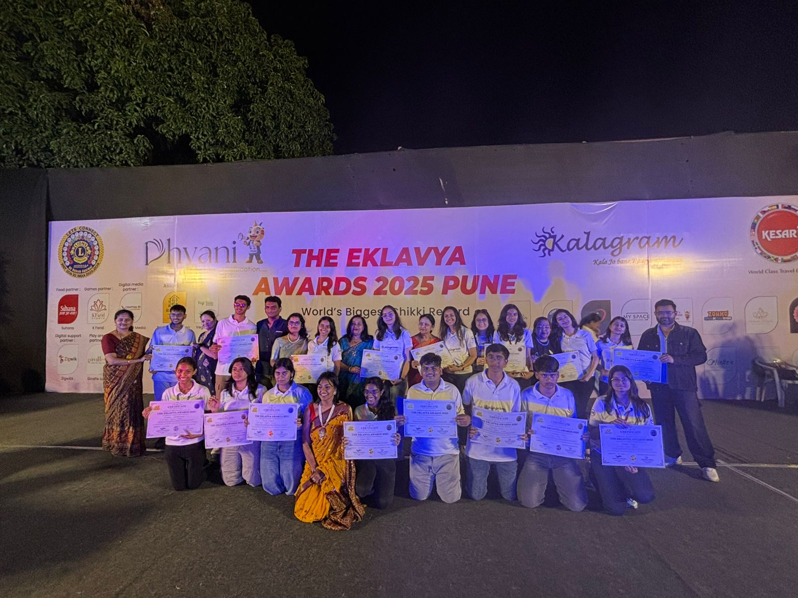
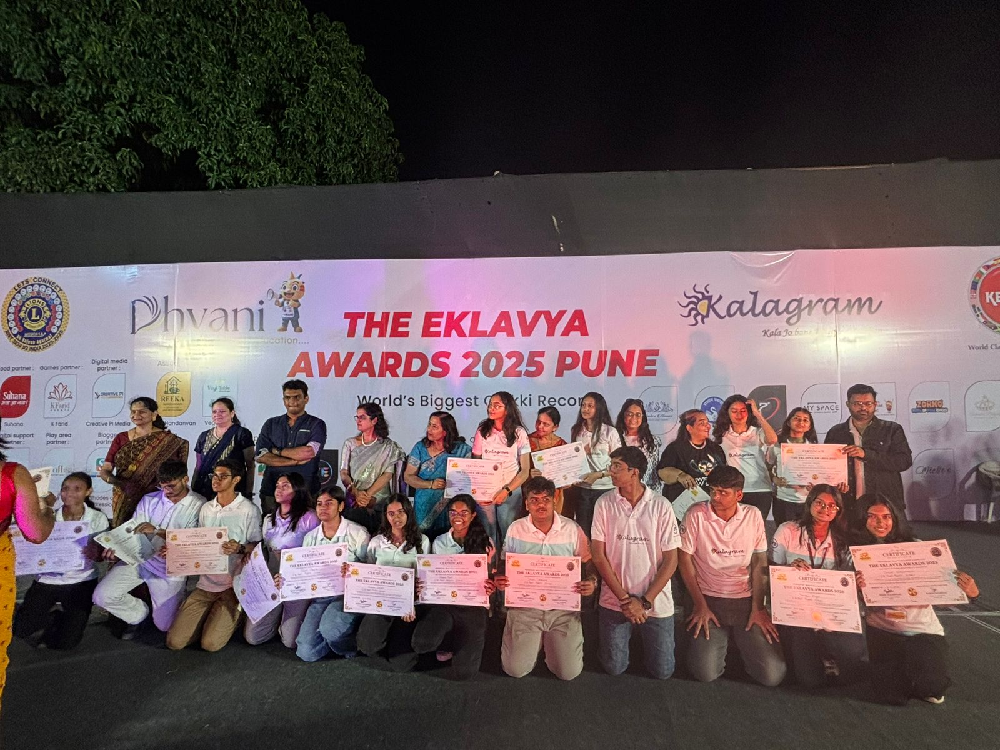
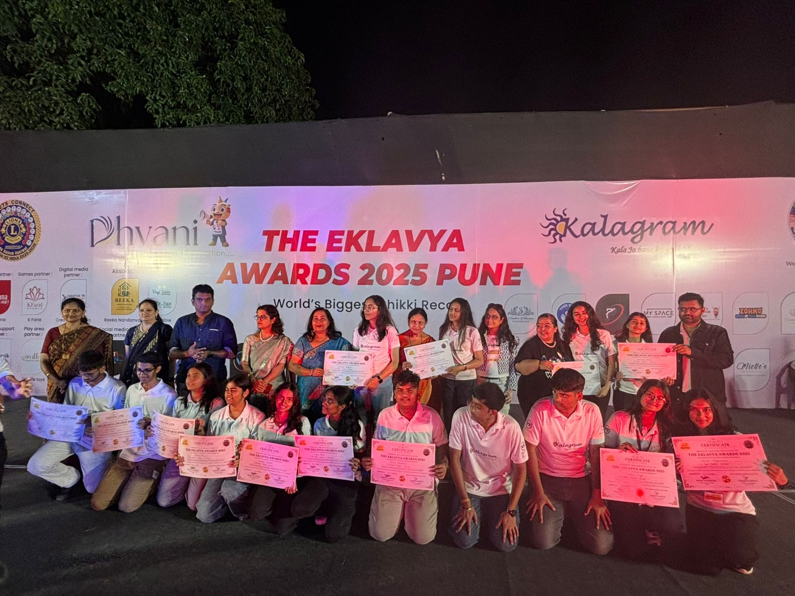
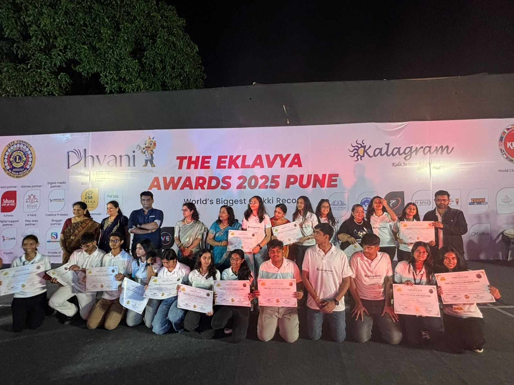
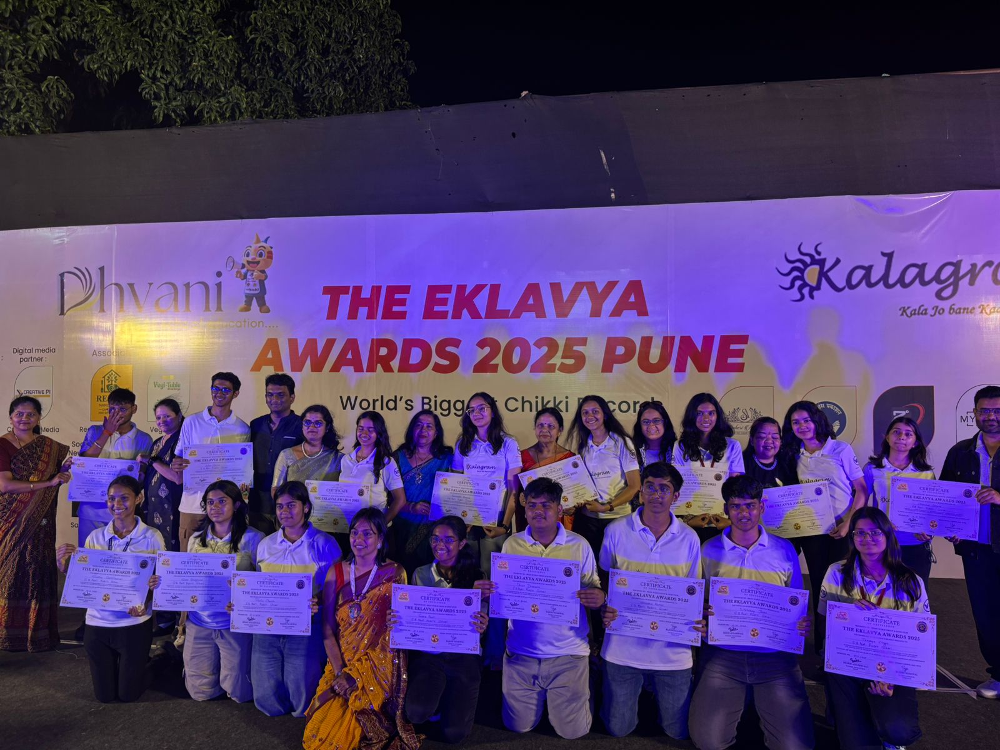
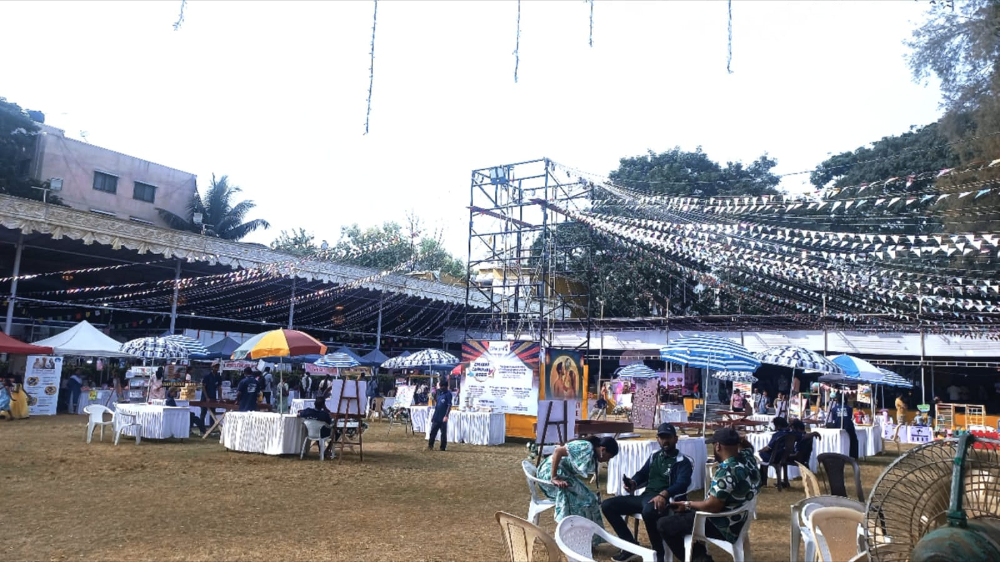
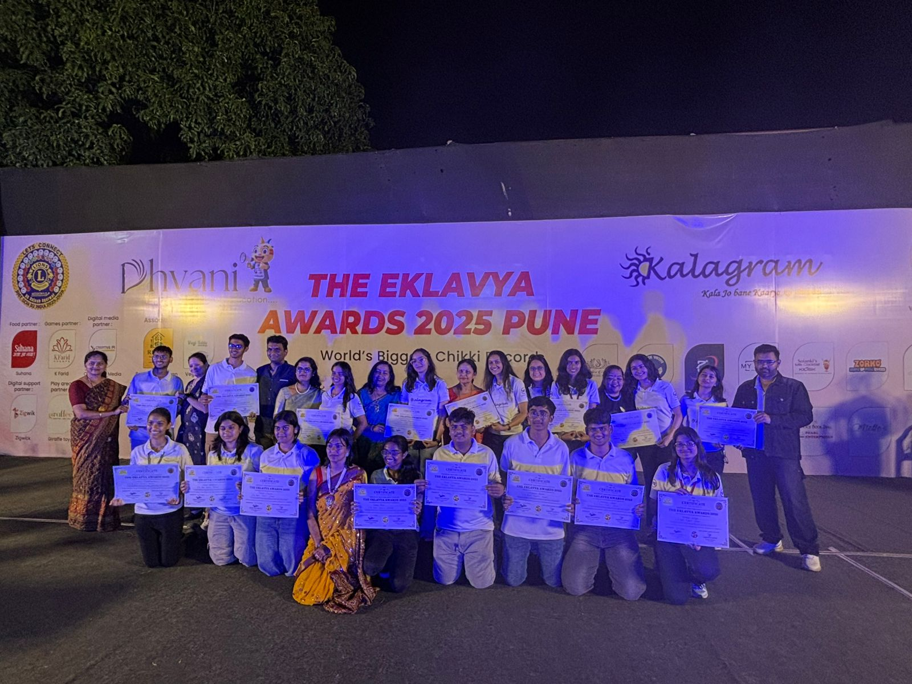
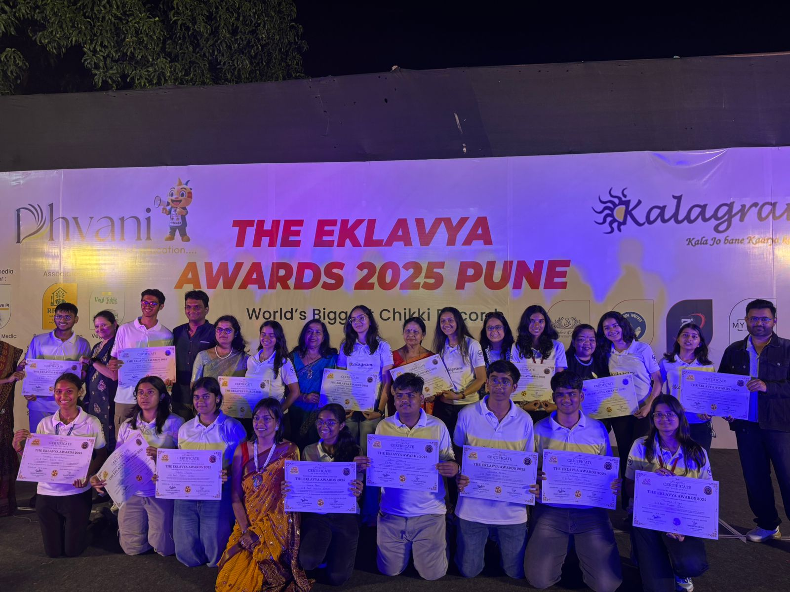
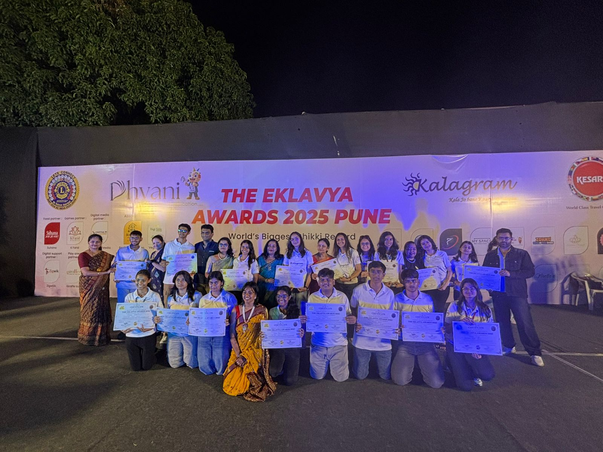
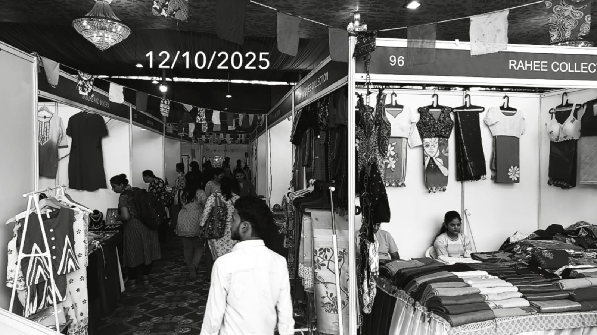
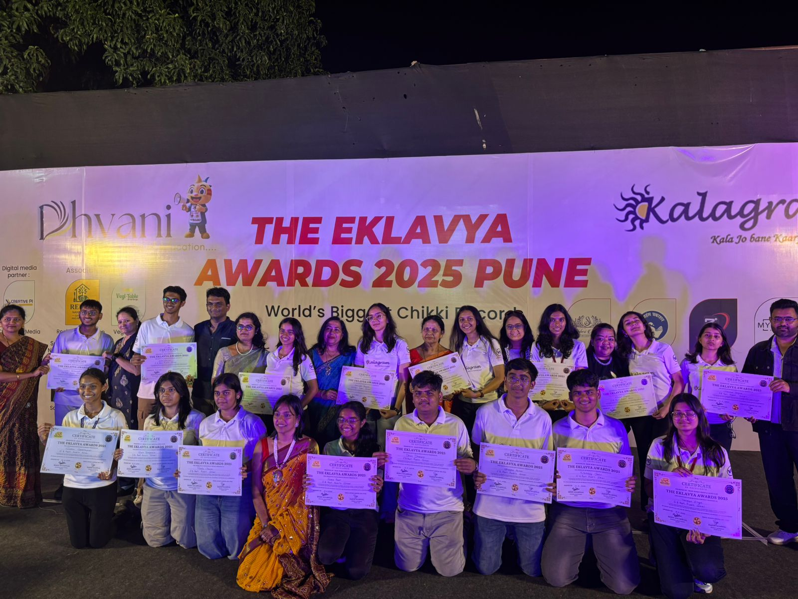
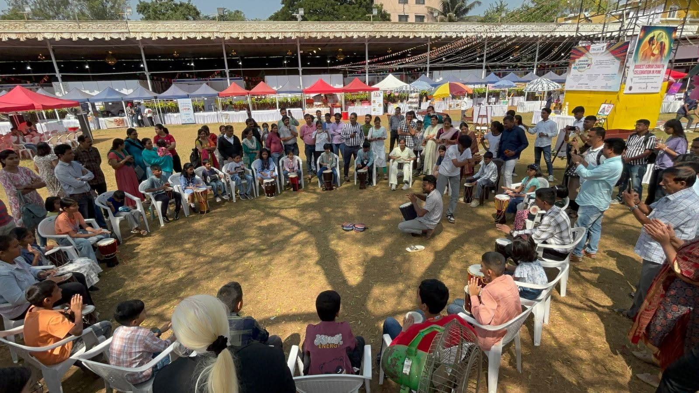
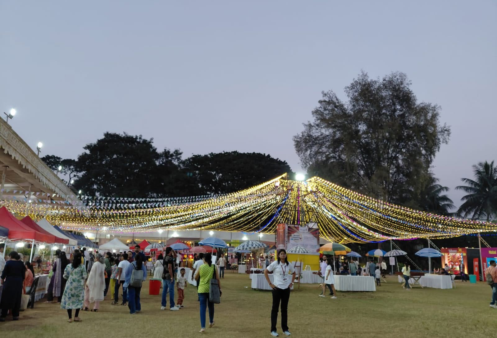
Dhvani Carnival gave me an opportunity to experience the work that happens behind a student-facing event. As an event-management volunteer, I was able to observe how coordination, communication, teamwork and responsibility come together to make an event function smoothly.
The experience helped me understand that event management is not limited to what an audience sees. It involves preparation, communication between people, responding to changing situations and making sure that different activities remain coordinated.
Working in an event environment also strengthened my interest in communication and student-led initiatives. It showed me how information can be turned into participation when it is planned, communicated and delivered effectively.
This experience became an early part of a larger interest in information, broadcasting, technical communication and creating useful content for students. That thread now continues through my work in student communication and through Wired & Inspired, where I explore technology and education through content, explanations and projects.
The experience taught me that communication is not separate from engineering or leadership—it is one of the skills that allows ideas, people and projects to move together.